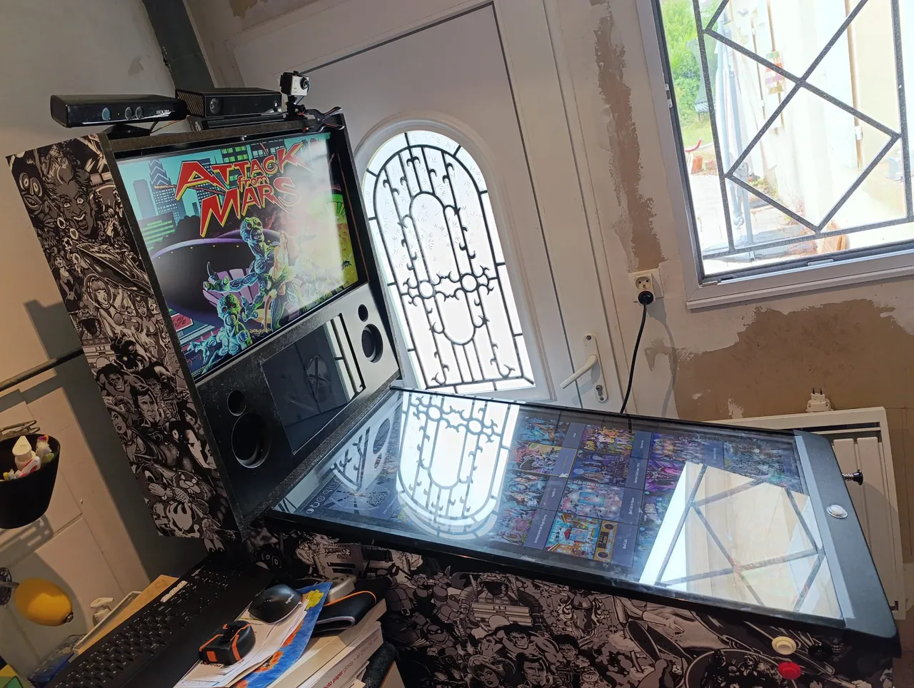
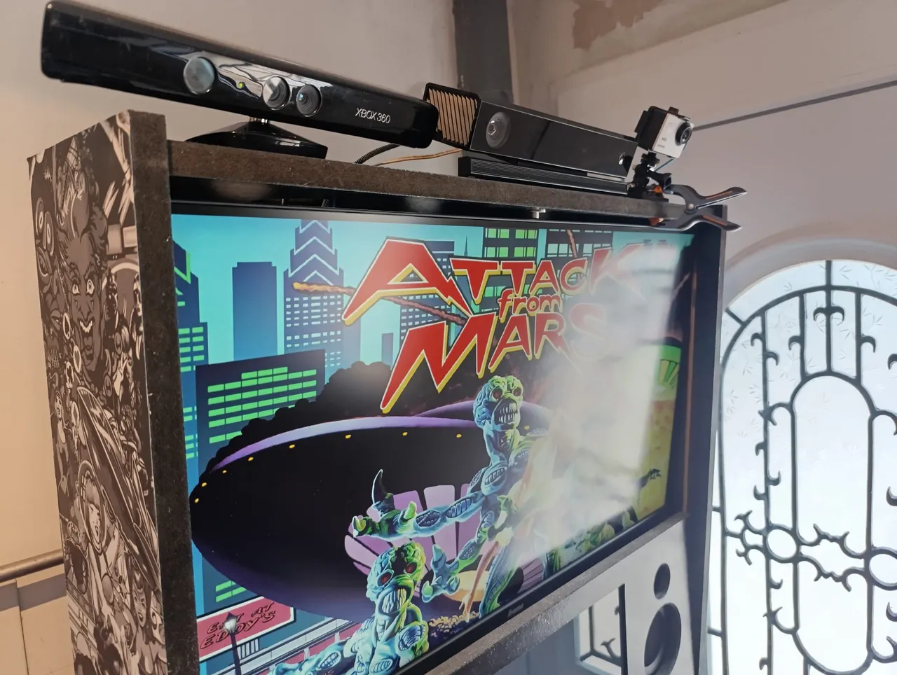
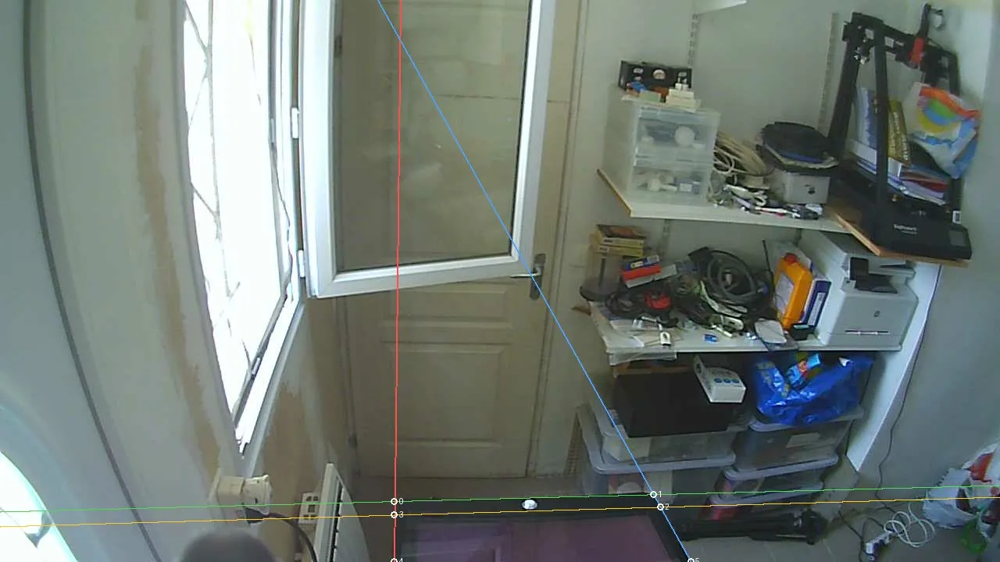
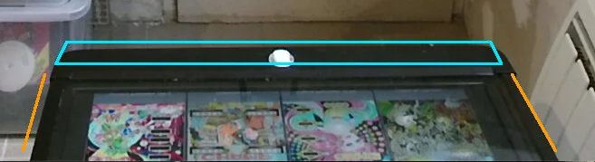

Head tracking for Visual Pinball X
Move your head, the table follows
headtracking gives Visual Pinball X (VPX) a point of view that follows your head, the fish-tank VR effect that makes a flat screen look like a real pinball playfield under glass. It works from a plain webcam or a Kinect v1 or v2, and it calibrates itself from your cabinet's lockbar and side rails. Free, open source, for Linux, Windows and macOS.

What makes it different
- No calibration routine. The cabinet is the calibration target: the lockbar and the two side rails form a rectangle of known size. Seen in perspective, it is enough to work out where the camera is and how it sees, from the image alone. No checkerboard, no “look here and press a key”. You only enter your lockbar width and screen inclination in VPX.
- 3D from a plain webcam. No depth sensor required. A Kinect measures the distance of your head directly and tracks in the dark, but it is a bonus, not a requirement.
- Nothing else to install. One plugin: no Microsoft SDK, no Python. The Kinect libraries and the neural-network runtime are built into it. A Kinect only needs a one-time USB access step on Linux and Windows, which the demo app can do for you.
- Open source and cross-platform. Written in Rust, released under the GPL, for Linux, Windows and macOS.
How it works
The lockbar and rails give the camera position; a body model finds your head; the plugin moves the VPX view every frame.
How it works →Download and install
One archive per system with the plugin and a demo app, then a few steps in VPX.
Install guide →Webcam or Kinect?
What each camera brings, minimum distances, mounting on the backbox, minicabs.
Choose a camera →Share your cabinet
Two minutes, no coding: a capture of your pincab teaches the calibration model new cabinets.
Contribute →On a real cabinet



The project needs you
The calibration model learns what lockbars and rails look like from real cabinets, and it has seen very few so far. If you own a pincab, sending a capture from the demo app takes two minutes and is the most useful help there is. Rust developers, computer-vision people, VPX players and Windows or macOS testers are welcome too.
Free software, built in the open
headtracking is written in Rust and released under the GNU GPL v3 or later. The source code, the releases and the issue tracker are on GitHub. Bug reports, help and beta testing happen on Discord.